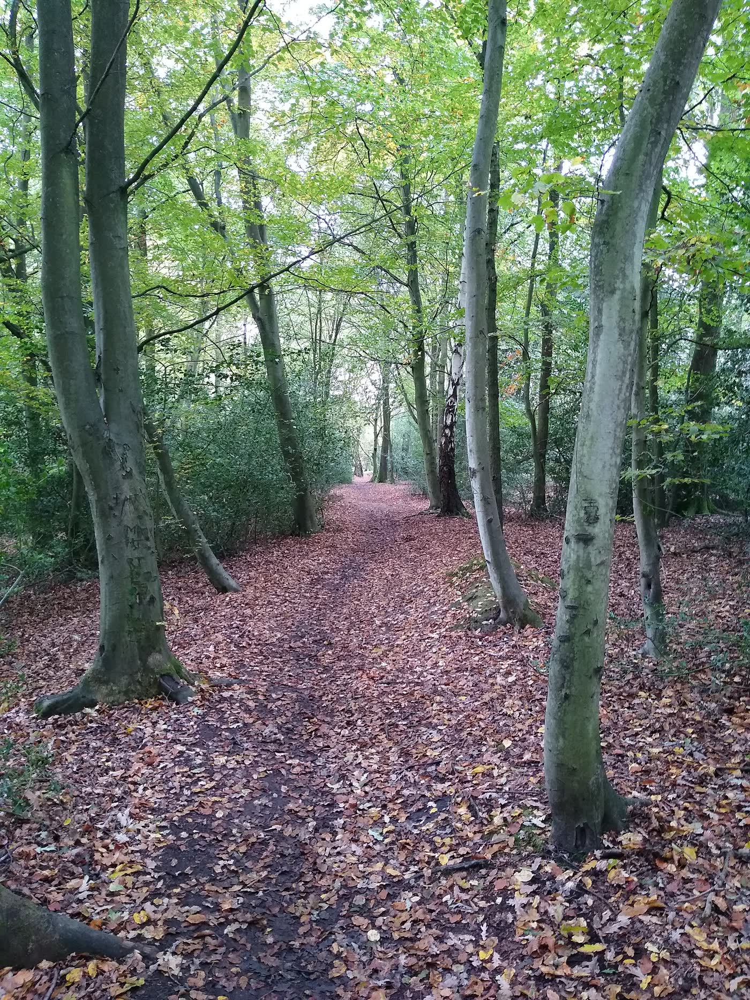
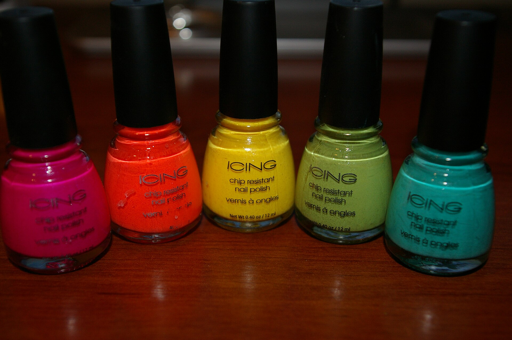
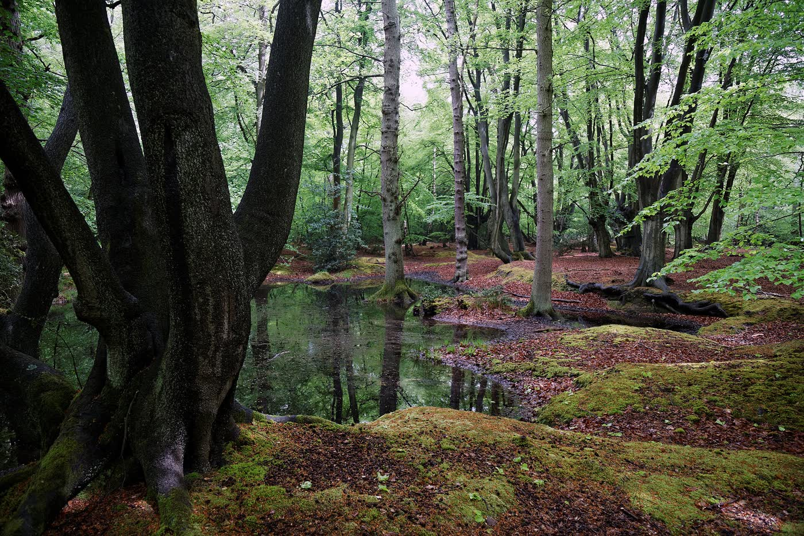
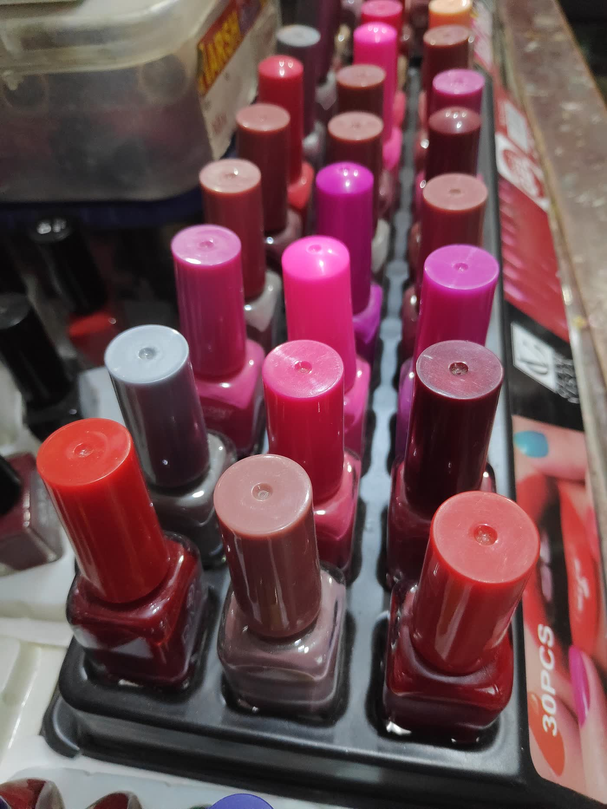

Gossip
Nails
A nail salon on Old Church Road, Chingford Mount. Monday to Saturday, 10am to 7pm.

A nail salon at 49 Old Church Road, Chingford Mount. Open Monday to Saturday, 10am to 7pm. Closed Sunday.

The public listing names manicures, pedicures, gel, acrylic, dip powder, extensions and nail art.

Chingford sits against Epping Forest. The salon is on Old Church Road, not in the woods.
What they list

Visit
49 Old Church Road
Chingford Mount
London E4 6SJ
| Monday to Saturday | 10am–7pm |
|---|---|
| Sunday | Closed |
Listed at 4.7 on Google, from about 240 public reviews.
Call 020 8524 6888